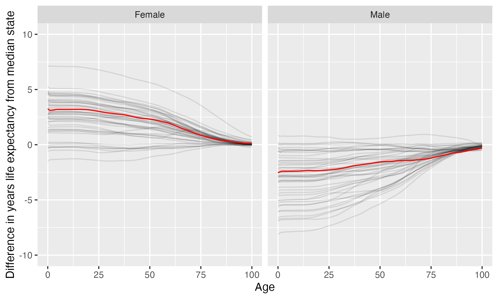

University of Jamestown
University of Jamestown is located in Jamestown, North Dakota. It is a private not-for-profit, 4-year or above institution.
From Wikipedia: The University of Jamestown is a private Christian university in Jamestown, North Dakota. Founded in 1883 by the Presbyterian Church, it has about 1,300 students enrolled and has been co-educational from its founding. Until August 2013, the school was known as Jamestown College.
Notes
These are items that bear looking into more closely.
California considers the state this institution is in to have one or more anti-LGBTQ+ laws. It prohibits California-sponsored travel to this state as a safety measure. See more here.
There are apparently no tenure stream faculty. This can indicate a risk to academic freedom and thus educational quality, as faculty members may be able to lose their positions because of their speech, publications, or research findings.
Overview of institution
Institution kind: Master’s Colleges & Universities: Small Programs
Undergrad program: Professions plus arts & sciences, some graduate coexistence
Graduate program: Postbaccalaureate: Other-dominant, with other professional programs
Enrollment profile: High undergraduate (see more details below)
Average net price for undergrads on financial aid: $20,095 (1.4 times the equivalent cost of Harvard).
Average net price for families with $30K-48K income: $16,466 (This is $15,070 more expensive than what Harvard costs for equivalent students).
Actual price for your family: Go here to see what your family may be asked to pay. It can be MUCH lower than the average price but also higher for some.
Size and setting: Four-year, small, highly residential
In state percentage: 42.4% of first year students come from North Dakota (note that 7.3% have no residence reported)
In US percentage: 92.7% of first year students come from the US (note that 7.3% have no residence reported)
Graduation rate (within 6 years) for students seeking a Bachelors: 55.7% (this is what is usually reported as “graduation rate”)
Graduation rate (within 4 years) for students seeking a Bachelors: 43.9%
Percent of students seeking a Bachelors who transfer out of this institution: 26.5%
Student to tenure-stream faculty ratio: NA (undergrads to tenure-stream faculty) [Tenure explained]
Student to faculty ratio: 11.7 (undergrads to all faculty)
Degrees offered: Bachelor’s degree, Master’s degree, Doctor’s degree: other
Schedule: Semester
Institution provides on campus housing: Yes
Dorm capacity: There are enough dorm beds for 899 students
Freshmen required to live on campus: No
Meal plan: Yes, number of meals per week can vary
Covid vaccination requirement for students: This institution was never reported as requiring covid vaccination for students (based on info from here)
Covid vaccination requirement for faculty/staff: This institution was never reported as requiring covid vaccination for faculty and/or staff (based on info from here)
Advanced placement (AP) credits used: Yes
Disabilities: 5 percent of undergrads are registered as having disabilities.
Overview of location
- Abortion in this state: Most restrictive (based on https://states.guttmacher.org/policies/ as of May 10, 2023)
- Gun law stringency: F (higher grade = more stringent)
- State rep support for contraception: 0% of US reps from this state voted in favor of legal protections for contraception.
- State rep support for recognizing same-sex and interracial marriage: 100% of US reps from this state voted in favor of requiring states to recognize same-sex and interracial marriages performed in other states
- Anti-trans legislative risk: Worst (based on Erin Reed’s work, as of June 25, 2023)
- Ecological region: Northern mixed grasslands
- Biome: Temperate Grasslands, Savannas & Shrublands
- Distance to mountains: 289.4 miles to Black Hills
- Climate: See overview at WeatherSpark
Similar institutions
This is using information about school size, acceptance rate, yield rate, graduation rate, cost, athletic conference, and similar metrics, but it can miss important axes of similarity (for example, culinary versus hair styling schools).
Map
Enrollment
| University of Jamestown | Change over ≤ 11 years | Trend | Great Plains Athletic Conference | Master’s Colleges & Universities: Small Programs | |
|---|---|---|---|---|---|
| Undergrads (full time) | 967 (2021) |

|
|||
| Undergrads (part time) | 51 (2021) |

|
↓ -4.2 per year |
||
| Grad students (full time) | 118 (2021) |

|
↑ 17 per year |
||
| Grad students (part time) | 140 (2021) |

|
|||
| Admission rate (undergrads) | 76% (2021) |

|
|||
| Yield rate (percent of applicants offered undergraduate admission who accept) | 34% (2021) |

|
✪✪✪✪✪ Better (higher) than 92% |
✪✪✪✪ Better (higher) than 72% |
|
| Graduation rate (bachelors in 6 years) | 56% (2021) |

|
✪✪ Better (higher) than 31% |
✪✪✪✪ Better (higher) than 61% |
|
| Transfer out rate (bachelors) | 27% (2021) |

|
✪✪✪ Better (lower) than 50% |
✪✪ Better (lower) than 39% |
Student financing
At many universities, almost no students pay the listed tuition and fees (“sticker price”): instead, their financial aid package lowers this dramatically, but how much students pay can vary substantially based on family income and other factors. The tuition below is the average across many students receiving aid: your family may be asked to pay less or more than this.
| University of Jamestown | Change over ≤ 11 years | Trend | Great Plains Athletic Conference | Master’s Colleges & Universities: Small Programs | |
|---|---|---|---|---|---|
| Average net price (for students awarded aid) | $20,095 (2020) |

|
↑ $509 per year |
✪✪✪✪✪ Better (lower) than 92% |
✪✪✪ Better (lower) than 44% |
| Undergrads getting federal aid | 87% (2021) |

|
✪✪✪✪✪ Better (higher) than 92% |
✪✪✪✪✪ Better (higher) than 83% |
|
| Undergrads getting any aid | 100% (2021) |

|
✪✪✪✪✪ Better (higher) than 100% |
✪✪✪✪✪ Better (higher) than 100% |
|
| Undergrads getting Pell grants | 32% (2021) |

|
✪✪✪✪ Better (higher) than 69% |
✪ Better (higher) than 19% |
Teaching
| University of Jamestown | Change over ≤ 11 years | Trend | Great Plains Athletic Conference | Master’s Colleges & Universities: Small Programs | |
|---|---|---|---|---|---|
| Undergrads per instructor (lower is better) | 12 (2019) |

|
↓ -0.3 per year |
✪✪✪✪ Better (lower) than 69% |
✪✪✪✪✪ Better (lower) than 86% |
| Total instructors | 82 (2020) |

|
↑ 2.5 per year |
||
| Non-tenure track instructors | 82 (2020) |

|
↑ 2.5 per year |
Student details
| University of Jamestown | Change over ≤ 11 years | |
|---|---|---|
| Dorm capacity | 899 (2021) |

|
| Percent of undergrads with registered disabilities (≤3 is rounded up to 3) | 5% (2021) |

|
Institution finances
| University of Jamestown | Change over ≤ 11 years | Trend | Great Plains Athletic Conference | Master’s Colleges & Universities: Small Programs | |
|---|---|---|---|---|---|
| Revenue from tution and fees | 27% (2021) |

|
✪✪✪✪✪ Better (lower) than 92% |
✪✪✪✪ Better (lower) than 76% |
|
| Revenue minus expenses | $16 M (2021) |

|
✪✪✪ Better (higher) than 46% |
✪✪✪✪ Better (higher) than 75% |
|
| Revenue | $44 M (2021) |

|
↑ $1.3 M per year |
||
| Expenses | $28 M (2021) |

|
↑ $1.3 M per year |
||
| Assets | $124 M (2021) |

|
↑ $5.2 M per year |
✪✪✪ Better (higher) than 46% |
✪✪✪✪ Better (higher) than 60% |
Graduation rates
Graduation rates for bachelor’s degrees within 150% of normal time (6 years for a 4-year degree). Note that this uses US federal demographic data: it only has two genders and a specified set of ethnicities and races. For groups with small numbers, the graduation rate may be highly variable year to year (do all three people in this group graduate this year or just two of three, for example).
| University of Jamestown | Change over ≤ 11 years | Great Plains Athletic Conference | Master’s Colleges & Universities: Small Programs | |
|---|---|---|---|---|
| Total | 56% (2021) |

|
✪✪ Better (higher) than 31% |
✪✪✪✪ Better (higher) than 61% |
| Men | 45% (2021) |

|
✪✪ Better (higher) than 25% |
✪✪✪ Better (higher) than 48% |
| Women | 66% (2021) |

|
✪✪✪✪ Better (higher) than 62% |
✪✪✪✪ Better (higher) than 70% |
| American Indian or Alaska Native men | 0% (2015) |

|
✪✪✪ Better (higher) than 50% |
✪✪✪ Better (higher) than 52% |
| American Indian or Alaska Native women | 0% (2020) |

|
✪✪✪ Better (higher) than 60% |
✪✪ Better (higher) than 32% |
| Asian men | 0% (2021) |

|
✪✪ Better (higher) than 22% |
✪✪ Better (higher) than 27% |
| Asian women | 0% (2021) |

|
✪ Better (higher) than 0% |
✪ Better (higher) than 13% |
| Black or African American men | 36% (2021) |

|
✪✪✪✪ Better (higher) than 64% |
✪✪✪✪ Better (higher) than 60% |
| Black or African American women | 50% (2021) |

|
✪✪✪✪ Better (higher) than 62% |
✪✪✪✪ Better (higher) than 72% |
| Hispanic men | 25% (2021) |

|
✪ Better (higher) than 20% |
✪✪ Better (higher) than 33% |
| Hispanic women | 33% (2021) |

|
✪✪ Better (higher) than 25% |
✪✪ Better (higher) than 27% |
| Native Hawaiian or other Pacific Islander men | 0% (2017) |

|
✪✪ Better (higher) than 25% |
✪✪✪✪ Better (higher) than 62% |
| Native Hawaiian or other Pacific Islander women | 0% (2021) |

|
✪✪✪ Better (higher) than 50% |
✪✪✪ Better (higher) than 53% |
| White men | 47% (2021) |

|
✪ Better (higher) than 17% |
✪✪ Better (higher) than 40% |
| White women | 71% (2021) |

|
✪✪✪✪ Better (higher) than 62% |
✪✪✪✪ Better (higher) than 78% |
| Two or more races men | 100% (2020) |

|
✪✪✪✪✪ Better (higher) than 100% |
✪✪✪✪✪ Better (higher) than 100% |
| Two or more races women | 50% (2021) |

|
✪✪✪ Better (higher) than 45% |
✪✪✪ Better (higher) than 56% |
| Nonresident alien men | 70% (2021) |

|
✪✪✪✪ Better (higher) than 70% |
✪✪✪✪ Better (higher) than 77% |
| Nonresident alien women | 80% (2021) |

|
✪✪✪ Better (higher) than 50% |
✪✪✪✪ Better (higher) than 66% |
Freshmen demographics
Demographic data for first time degree-seeking students. Note that this uses US federal demographic data: it only has two genders and a specified set of ethnicities and races.
| University of Jamestown | Change over ≤ 11 years | |
|---|---|---|
| Men (percent freshmen) | 54% (2021) |

|
| Women (percent freshmen) | 46% (2021) |

|
| American Indian or Alaska Native men (percent freshmen) | 0.3% (2021) |

|
| American Indian or Alaska Native women (percent freshmen) | 0.6% (2021) |

|
| Asian men (percent freshmen) | 0.3% (2021) |

|
| Asian women (percent freshmen) | 0.3% (2021) |

|
| Black or African American men (percent freshmen) | 2.2% (2021) |

|
| Black or African American women (percent freshmen) | 0% (2021) |

|
| Hispanic men (percent freshmen) | 5.7% (2021) |

|
| Hispanic women (percent freshmen) | 4.1% (2021) |

|
| Native Hawaiian or Other Pacific Islander men (percent freshmen) | 0.6% (2021) |

|
| Native Hawaiian or Other Pacific Islander women (percent freshmen) | 0% (2021) |

|
| White men (percent freshmen) | 38% (2021) |

|
| White women (percent freshmen) | 37% (2021) |

|
| Two or more races men (percent freshmen) | 0.6% (2021) |

|
| Two or more races women (percent freshmen) | 0.9% (2021) |

|
| Race ethnicity unknown men (percent freshmen) | 1.6% (2021) |

|
| Race ethnicity unknown women (percent freshmen) | 0.9% (2021) |

|
| Nonresident alien men (percent freshmen) | 4.7% (2021) |

|
| Nonresident alien women (percent freshmen) | 2.2% (2021) |

|
Freshmen geography
| University of Jamestown | Change over ≤ 11 years | |
|---|---|---|
| In state | 42% (2020) |

|
| US | 93% (2020) |

|
| Not reported | 7.3% (2020) |

|
Tenure track faculty
Tenure track faculty are those who are eligible for tenure. This includes both pre-tenure and tenured faculty. Once faculty get tenure, they are (generally) protected from being fired for intellectual reasons, helping to ensure their freedom in teaching and research. They can still lose their positions for misconduct, financial problems, not fulfilling their duties, or other reasons. Note that this chart uses US federal demographic data: it only has two genders and a specified set of ethnicities and races.
Non-tenure track faculty
Non-tenure track faculty are not eligible for tenure. Some are hired one semester at a time, some have multi-year contracts. They typically have a higher teaching load than tenure track faculty, leaving less time for research or other creative endeavors. They are also easier to fire than tenured faculty. Sometimes they are external experts (a noted musician, a former senator) who are hired to teach some classes without the expected permanence of a tenure-track position. Note that this chart uses US federal demographic data: it only has two genders and a specified set of ethnicities and races.
| University of Jamestown | Change over ≤ 11 years | Trend | |
|---|---|---|---|
| Total (non-tenure-track count) | 82 (2020) |

|
↑ 2.5 per year |
| Women (non-tenure-track count) | 45 (2020) |

|
↑ 1.8 per year |
| Men (non-tenure-track count) | 37 (2020) |

|
↑ 0.7 per year |
| American Indian or Alaska Native (non-tenure-track count) | 0 (2020) |

|
|
| Asian (non-tenure-track count) | 2 (2020) |

|
|
| Black or African American (non-tenure-track count) | 0 (2020) |

|
|
| Hispanic or Latino (non-tenure-track count) | 0 (2020) |

|
|
| Native Hawaiian or other Pacific Islander (non-tenure-track count) | 0 (2020) |

|
|
| White (non-tenure-track count) | 76 (2020) |

|
↑ 2.2 per year |
| Two or more races (non-tenure-track count) | 0 (2020) |

|
|
| Nonresident alien (non-tenure-track count) | 0 (2020) |

|
↓ -0.2 per year |
Library facilities
| University of Jamestown | Change over ≤ 11 years | Trend | Great Plains Athletic Conference | Master’s Colleges & Universities: Small Programs | |
|---|---|---|---|---|---|
| Number of physical books | 90,151 (2021) |

|
✪✪✪✪ Better (higher) than 77% |
✪✪✪ Better (higher) than 56% |
|
| Physical library circulations per students and faculty | 1.7 (2019) |

|
↓ -0.8 per year |
✪✪ Better (higher) than 23% |
✪✪ Better (higher) than 40% |
| Digital library circulations per students and faculty | 1.3 (2019) |

|
✪✪ Better (higher) than 23% |
✪✪ Better (higher) than 21% |
Life expectancy
This hopefully will not be relevant for potential students, but it may be for people moving to an area longer term, such as faculty and staff choosing where to live. This uses information from US National Vital Statistics Reports for 2020; like much federal data, it assumes people are male or female. For age difference from median, it is from the median state, averaging across all genders (one consequence of this is that the difference from the median life expectancy is almost always negative for men).
- Life expectancy at birth: 80 years women (3.2 years over the median), 74.2 years men (2.5 years below the median)
- Remaining life expectancy at age 18: 62.6 years women (3.2 years over the median), 57.1 years men (2.3 years below the median)
- Remaining life expectancy at age 30: 51 years women (2.9 years over the median), 46 years men (2.2 years below the median)
- Remaining life expectancy at age 45: 36.9 years women (2.4 years over the median), 32.8 years men (1.7 years below the median)
- Remaining life expectancy at age 60: 23.9 years women (1.9 years over the median), 20.5 years men (1.4 years below the median)
We can also plot the extra / fewer years of life expected for this state (red) compared to other states (dark gray) at each age. Again, this is normalized for the median state.

SAT scores
| University of Jamestown | Change over ≤ 11 years | |
|---|---|---|
| Applicants submitting SAT | 17% (2021) |

|
| SAT Evidence Based Reading and Writing 25th percentile score | 450 (2021) |

|
| SAT Evidence Based Reading and Writing 75th percentile score | 560 (2021) |

|
| SAT Math 25th percentile score | 450 (2021) |

|
| SAT Math 75th percentile score | 580 (2021) |

|
ACT scores
| University of Jamestown | Change over ≤ 11 years | Trend | |
|---|---|---|---|
| Applicants submitting ACT | 83% (2021) |

|
|
| ACT Composite 25th percentile score | 17 (2021) |

|
|
| ACT Composite 75th percentile score | 24 (2021) |

|
↓ -0.5 per year |
| ACT English 25th percentile score | 15 (2021) |

|
|
| ACT English 75th percentile score | 23 (2021) |

|
↓ -0.7 per year |
| ACT Math 25th percentile score | 17 (2021) |

|
|
| ACT Math 75th percentile score | 26 (2021) |

|